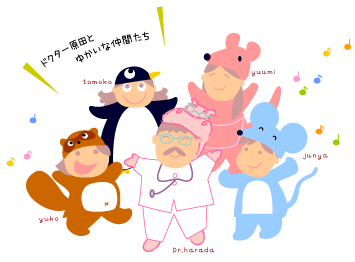

こども健康倶楽部とは当サイト（こども健康倶楽部）は、専門医と病気の子どもの家族が協力し合うことで、情報発信の側と利用する側の理解の壁をなくし、正しい医療情報を正しく理解し、上手に活用して頂くことを目的に立ちあげました。 情報が氾濫している今、正しい情報を正しく理解することは、かえって難しいといわれている時代です。 |
 |
|
こども健康倶楽部は、情報環境の整備のモデルケースとなるべく、研究と検討をつづけながら成長するサイトを目指しています。 |
|
当サイト（こども健康倶楽部）は、以下の研究事業の一環として、開発・制作の費用の提供を受けています。・ 平成19年度厚生労働科学研究（子ども家庭総合研究事業）安全・安心な母子保健医療提供体制整備のための総合研究 「子どもの病気に関する包括的データベース（難治性疾患に関する疫学研究データベース等を含む）の構築とその利用に関する研究」 |
|
| 主任研究者：原田正平（国立成育医療センター研究所） | |
| ・ 平成20、21年度厚生労働科学研究（子ども家庭総合研究事業） 成育疾患のデータベース構築・分析とその情報提供に関する研究 |
|
| 研究代表者：原田正平（国立成育医療センター研究所） | |
| This site was partly supported by a
grant from the Ministry of Health, Labour and Welfare of Japan (Research on Children
and Families).
※国立成育医療センターは2015年4月より、国立研究開発法人 国立成育医療研究センターとなりました。 |
|
| ■総合監修：聖徳大学児童学部児童学科教授 原田正平 | |
|
北海道大学医学部卒業。北海道内の大学病院、一般病院で小児科医としての研修を受け、その後、大学病院及び北海道立衛生研究所で、小児内分泌学に関する臨床研修と研究を行う。 特に先天性甲状腺機能低下症（クレチン症）マススクリーニングに関しては、専門医としてだけではなく、スクリーニング検査を実際に長期にわたり行った経験を有している。 一般病院勤務のかたわら個人でクレチン症等に関するWebサイトを2000年ころに立ち上げ、メール相談件数は延べ数千となっている。その個人サイトが当サイトの原型となった。 その後、2016年４月に千葉県松戸市の聖徳大学児童学部児童学科教授となり、児童学（主に小児保健や小児栄養）に関する研究や保育士・幼稚園教諭等の育成にあたっています。 主な学会等の活動は、日本マススクリーニング学会評議員、日本甲状腺学会評議員（小児甲状腺疾患診療委員会委員長）、日本小児内分泌学会評議員（マススクリーニング委員会委員）、 日本内分泌学会内分泌代謝指導医（小児科）。（2016年4月現在） |
|
| ■制作ディレクター：エア インフィニティー株式会社 岡本 侑子 | |
武田薬品工業株式会社にて勤務の後、医療専門広告代理店、医療専門ITベンチャーを経た後、独立。 医療、美容と健康、ライフスタイル関連など、生活に密着したテーマを中心に、プランニングから実制作までをこなす。 2006年、エア インフィニティー株式会社を設立。現在、５歳になる娘の育児も真っ最中。よく働き、よく遊び、よく笑いがモットー。 |
|
| ■開発エンジニア：石原 淳也 | |
2006年よりフリーランスのソフトウェアエンジニアとして活動。 合同会社つくる社 代表社員。株式会社まちクエスト 代表取締役社長。 ブログ：僕は発展途上技術者 |
|
| ■デザイナー：吉岡 朋子 | |
畑違いの仕事から転身、いくつかのデザイン事務所を経て、2001年よりフリーランスに。 |
|
| ■開発サポーター：吉田 裕美 | |
計測器メーカー、CADのベンチャー企業を経て、2000年に独立しソフトウェアの開発、コンサルティング、 現在は「問題解決型のソフトウェア教育」に注力しています。 サイト： EY-Officeブログ： yuum3のお仕事日記 |
|